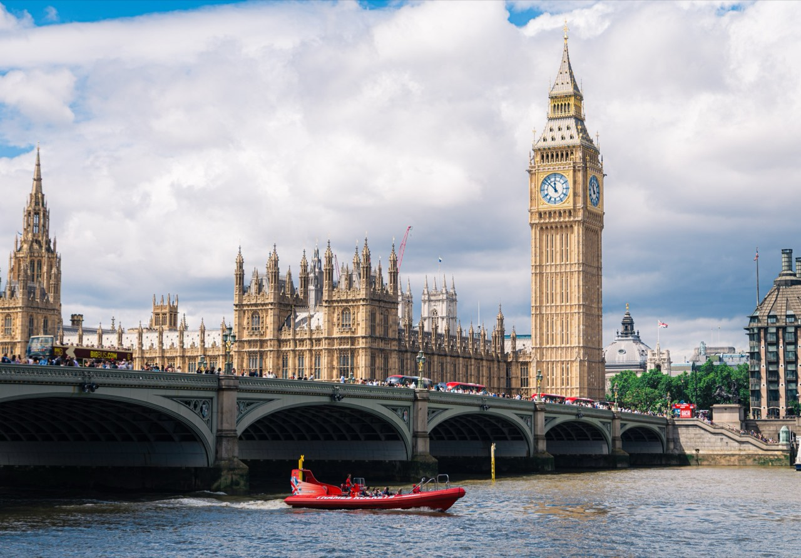

Travel like a photographer.
Landscape photographs by Thomas Chen 陳亮元. Open any one to see how it was made.

Guides
Japantuan photography JapanPhotographsJapanGuide not written yetHong Kongtuan photography
JapanPhotographsJapanGuide not written yetHong Kongtuan photography Hong KongPhotographsHong KongGuide not written yetBarcelonatuan photography
Hong KongPhotographsHong KongGuide not written yetBarcelonatuan photography BarcelonaA photographer's guideBarcelonaRead the guideDubaituan photography
BarcelonaA photographer's guideBarcelonaRead the guideDubaituan photography DubaiPhotographsDubaiGuide not written yetLondontuan photography
DubaiPhotographsDubaiGuide not written yetLondontuan photography LondonPhotographsLondonGuide not written yet
LondonPhotographsLondonGuide not written yet
Hong KongPhotographsHong KongGuide not written yetBarcelonatuan photographyBarcelonaA photographer's guideBarcelonaRead the guideDubaituan photographyDubaiPhotographsDubaiGuide not written yetLondontuan photographyLondonPhotographsLondonGuide not written yetGuides for 15 more countries are not written yet. See every destination

Photographs


